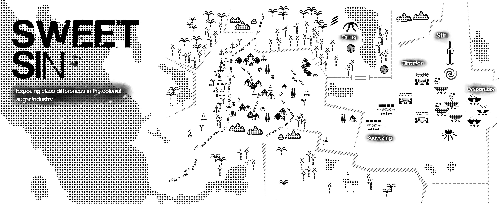

Sweet Sin
Concept
Sweetness is never innocent. Sugar, often associated with pleasure and indulgence, carries a hidden history of exploitation and violence. This project reexamines sweetness not as a neutral or joyful experience, but as a product shaped by systems of colonialism, forced labor, and global inequality. By reframing sugar as both a material and a metaphor, Sweet Sin questions the cost behind everyday consumption and exposes the dissonance between surface pleasure and historical reality.
Overview
Sweet Sin is a speculative visual project that reconstructs the forgotten narratives behind sugar production. Drawing from the history of colonial sugar plantations, the project highlights the exploitation of enslaved Africans whose labor fueled the global sugar economy. The work contrasts the polished, seductive aesthetics of desserts with underlying structures of violence. Elements such as exaggerated sweetness, flowing syrup, and ornamental displays are reinterpreted as symbols of excess, control, and hidden suffering. Through installation, visual mapping, and storytelling, the project creates an immersive environment where sweetness becomes unsettling. A dessert stand is transformed into a theatrical structure—supported by sugarcane-like forms and covered in deep red surfaces—where syrup flows like a trace of labor and sacrifice. Rather than presenting history as distant and resolved, Sweet Sin brings it into the present, inviting viewers to reconsider their everyday relationship with consumption and the invisible systems that sustain it.

Booklet Design


Installation